A matching puzzle where you connect two identical Chip’ums with a wire that can bend twice. This page follows the game through three days of building it with an AI coding partner: every change started with something that looked wrong, felt off, or could be cuter, then got built, tested on a real phone, and refined.
The game ran in a web browser. To feel like a real game it needed to be an app you tap on your phone.
Wrapped the same web code in a tiny native app shell (Capacitor) and ran it in the iPhone simulator.
One codebase can be a website, an iPhone app, and an Android app. The whole game is only a few hundred kilobytes.
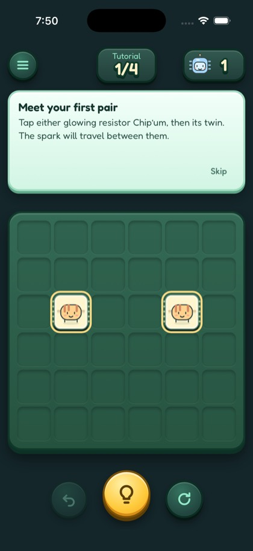
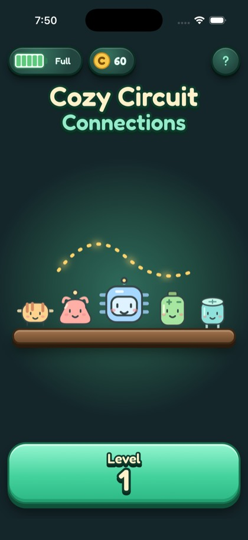
Episode idea: “My browser game is now an iPhone app.”
Most puzzle games use hearts for lives. Hearts don't fit a game about circuits.
Lives became Charges on a battery that recharges over time. At zero, a sleepy Bastion the Battery appears and you can Recharge with Chip Coins.
Theme your systems. A battery explains “refill over time” without words. Later, the number on the battery came off: the filled cells said it all.
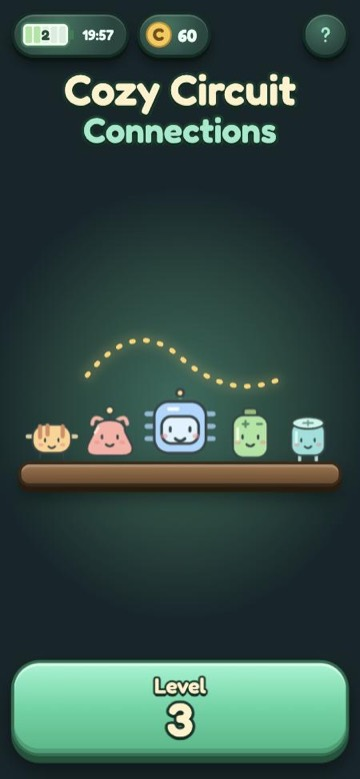
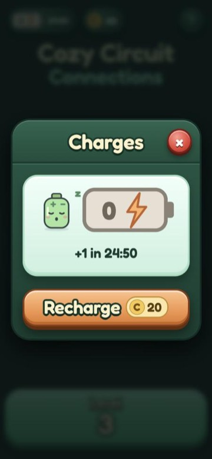
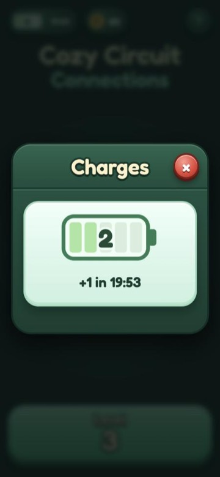
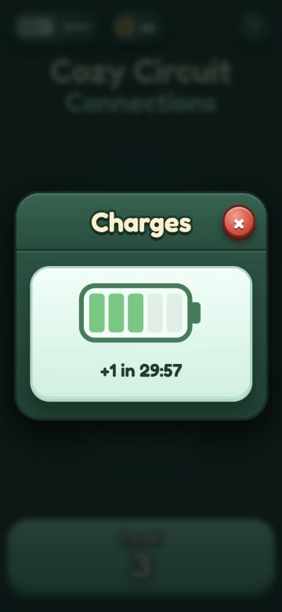
Episode idea: “Why my game has batteries instead of hearts.”
When you ran out of moves, a plain text box said “No moves left.” Failing felt like an error message.
A “Short circuit!” card: a frazzled Chip’um, a burnt corner with embers and smoke, a spark that sputters around the edge, and a clunky landing.
The first burn was too faint. Look at it, then push it further.
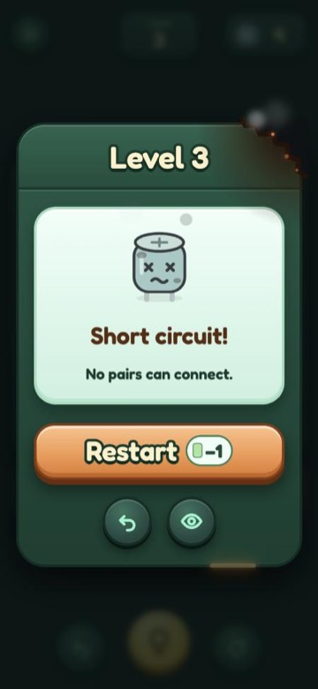
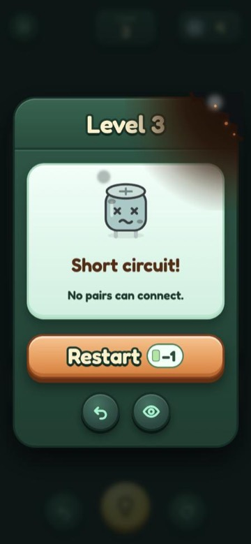
Episode idea: “Designing a fail screen people don't hate.”
The zap and pop animations felt slow, but guessing milliseconds in code is hard.
Built a hidden “play room” page: a test board with sliders for every animation, so the speeds could be tuned by eye and then copied into the game.
When a decision is about feel, build a tool that lets a person feel it. Even the tool had a bug at first: the board was cut off.
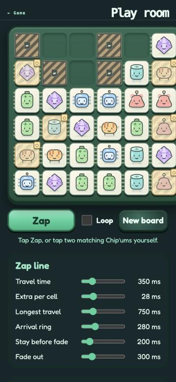
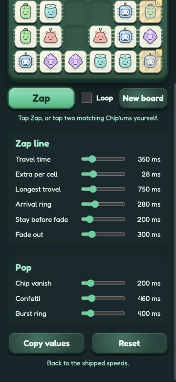
Episode idea: “I built a tool to tune my game's animations.”
Each time a shield broke, the board got a couple of pixels shorter. It never happened in the browser or the simulator, only on the real iPhone.
Before-and-after screenshots from the phone showed the rows resizing around the chips. Giving the board six fixed, equal rows fixed it.
Simulators lie a little. Test on the real device, and screenshots make bugs easy to explain.
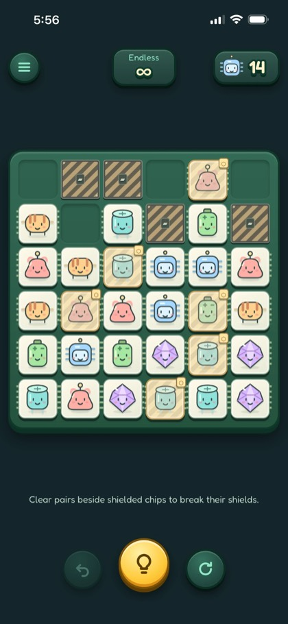
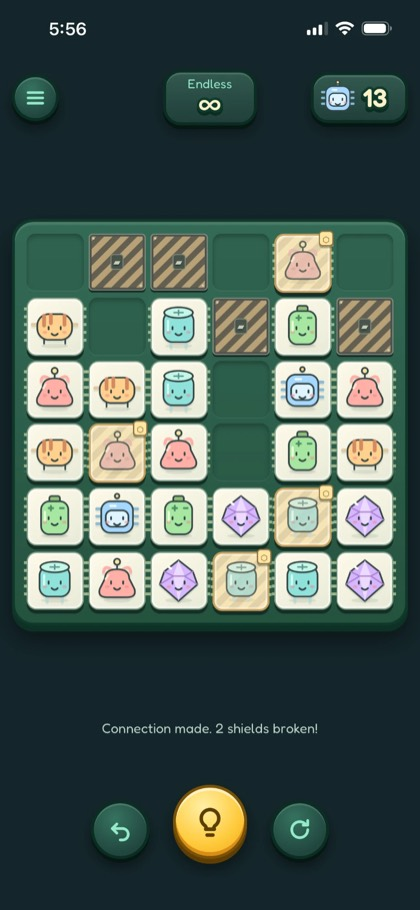
Episode idea: “A bug that only happened on my phone.”
The selected chip's outline spilled onto neighboring chips, and it looked plain for a game about electricity.
Moved the ring inside the chip, then added a flickering green ring with sparks racing around it. Two styles were tried side by side; the final mixes the bold ring with the soft sparks.
Give the person deciding real options to compare, then combine the best parts.
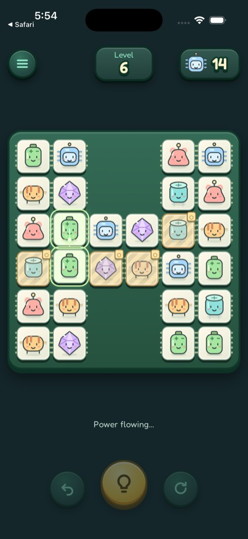
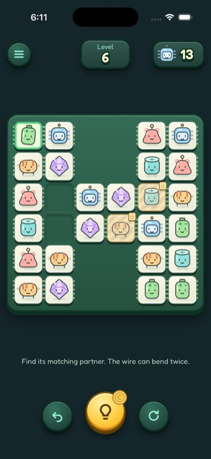
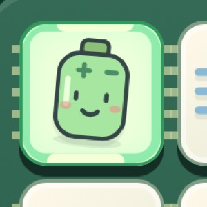
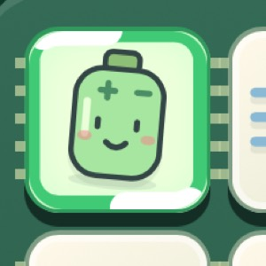
Episode idea: “Small polish that makes a game feel pro.”
The launch screen filled the space around the logo with a slightly different blue than the logo's own background, so dark bands showed above and below it.
Read the exact color from the edge pixels of the logo image (#051246)
and used it everywhere around it.
Don't eyeball colors. Measure them.
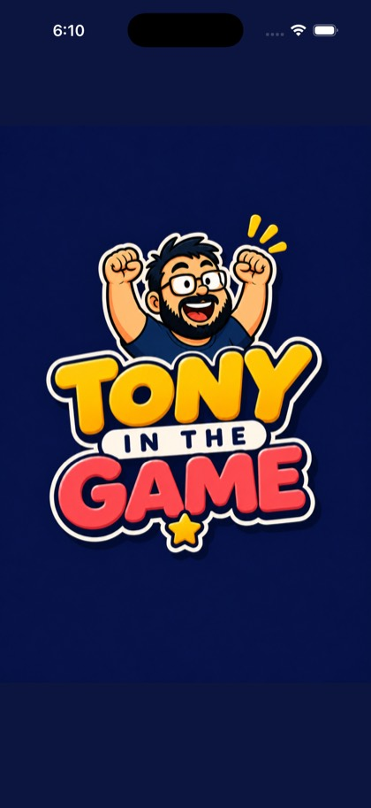
Later levels needed more challenge without new rules to learn.
A shield can now take two hits. The first match beside it cracks it; the second breaks it and frees the Chip’um.
Extend a rule players already know before inventing a new one.
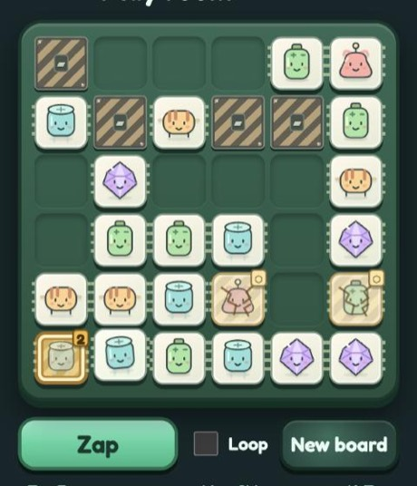
The characters were too cute to just sit still.
Every second or two, one random Chip’um blinks, yawns, bounces, or wiggles. The eyes and mouth in the artwork were tagged so code can move them.
Small, random motion makes characters feel alive, and it costs almost nothing.
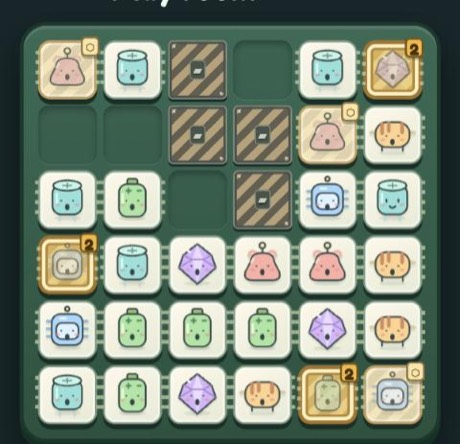
What if a yawn turned into a nap? Sleepy Chip’ums became a whole level type.
A moon icon and a night-blue board. Chip’ums doze off over time and must be tapped first to wake them. If everyone falls asleep, it's lights out.
The first sleepers were hard to spot. A lavender tint and a bold “z” fixed readability.
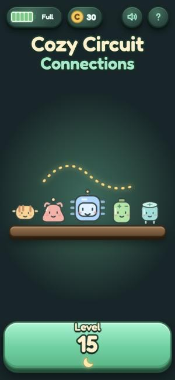
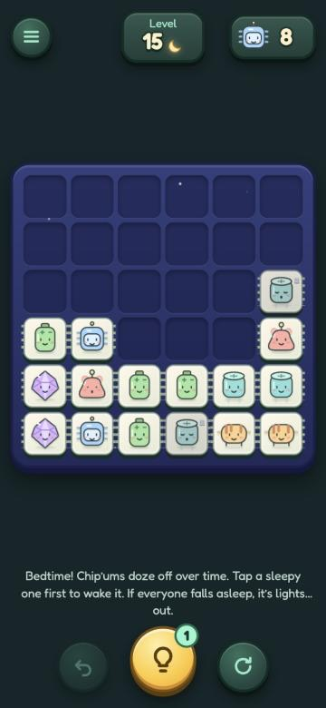
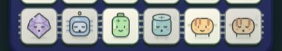
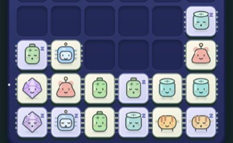
Episode idea: “Turning an animation into a game mechanic.”
A plan for 26 seasons a year needs variety, but not 26 new rules.
Shields became “covers” that can wear seasonal outfits: ice that shatters, gift wrap that unwraps, eggs that hatch. Same rule, new look, sound, and message.
Separate the rule from the art, and one feature becomes many. These are placeholder art, marked for a later art pass.
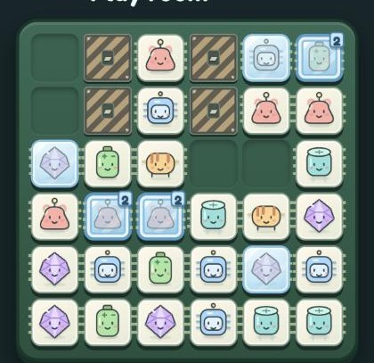
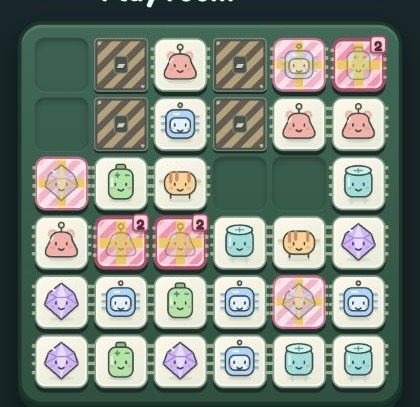
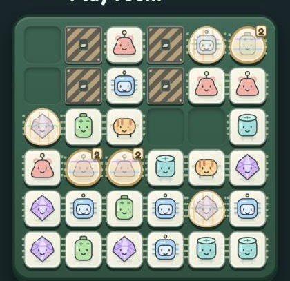
Episode idea: “How to plan a year of seasonal content.”
Progress was stored the way websites store things, and iPhones can delete that when they run low on space.
Moved saves into the phone's own storage, copying existing progress across once. Then deliberately wiped the old storage to prove it.
Test the scary case on purpose. Same board, same 9 pairs, after the wipe.
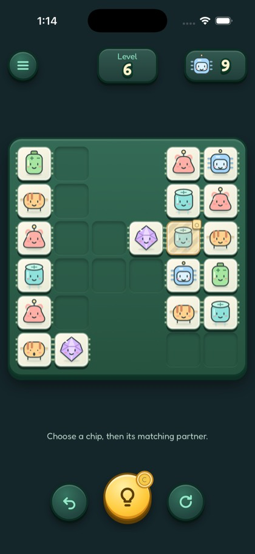
Apple rejected an upload over iPad screen rotation, and long-pressing on the phone could select text like a web page.
Marked the app full screen for iPad, and turned off text selection and long-press menus across the game.
Real stores and real fingers find problems no browser shows you. Each fix is small once you see it.
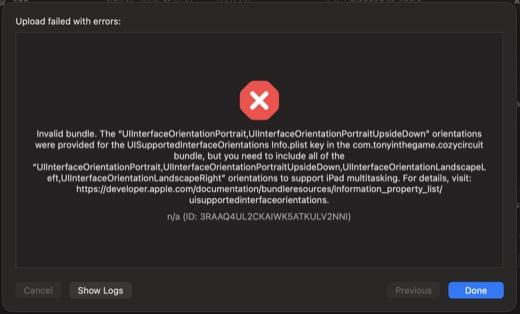
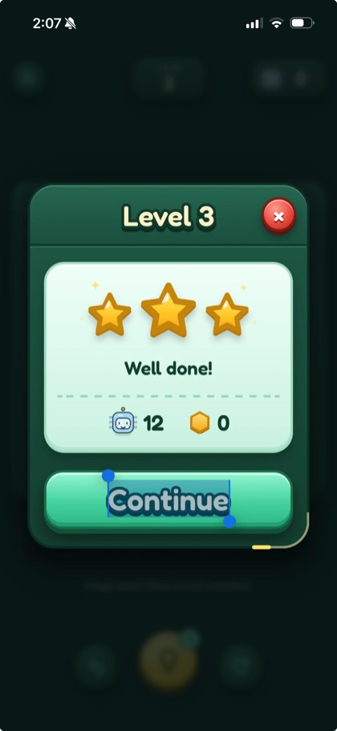
Episode idea: “What Apple rejected, and why.”
Players needed a small reason to return each day, and the Chip Coin prices needed real coins flowing to test them.
Three quests a day, like “Collect 20 Lulos” or “Clear a level on the first try,” shown as rings that fill as you play. A finished quest glows gold; Claim pays Chip Coins.
Reuse the space you planned for: the home screen had empty columns waiting for exactly this.
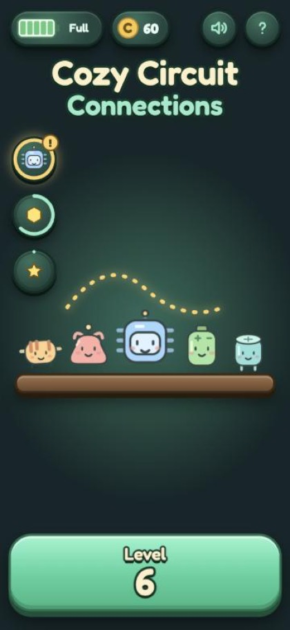
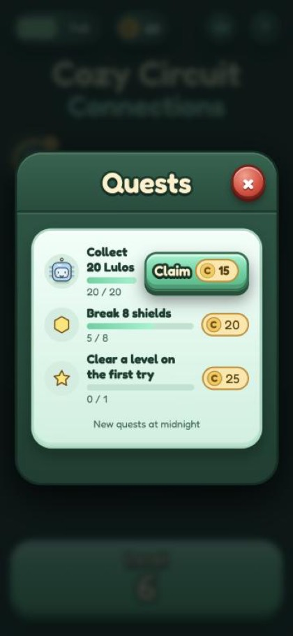
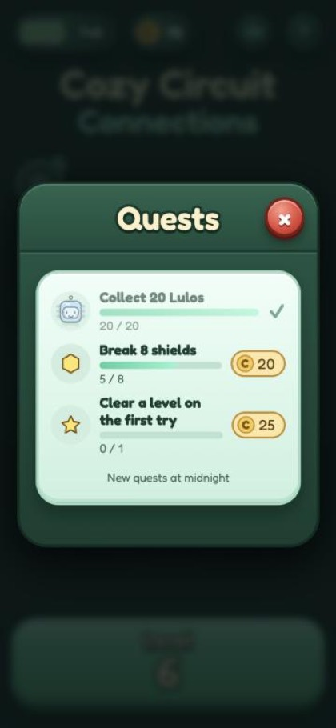
Episode idea: “Designing daily quests for a cozy game.”